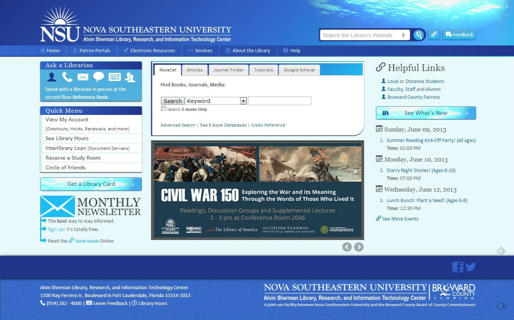
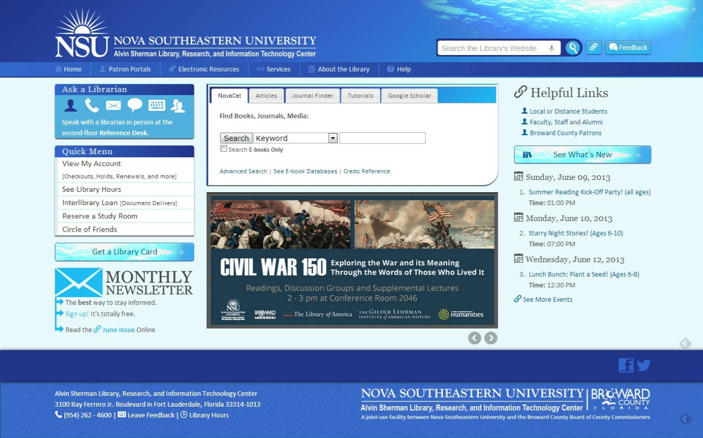

-
Front-End Librarian
Librarian of Web Services and ASLRITC - Note 2
- Note 3
What we know ...
- Users don't scroll.
- The front page is important!

15.5" Laptop / 1366 xw 768
that's about 7 vertical inches


 

Staying above the fold
requires that we know where the fold is.We don't.
The Myth of the Fold
is pervasive. The powerful assumption that users don't scroll seems observant - it feels right.
We just can't prove it ...
Consider the ClickTale Scrolling Report / Jakob Nielsen's Alertbox: Scrolling and Attention / Blasting the Myth of the Fold / The Myth of the page Fold: Evidence from User Testing
↓
Users scroll through
single types of content
and backward through time
The Fold as Antipattern
We can't deny the formative power "the fold" has in a design committee, especially for a library website, which must sometimes be built to the expectations of many stakeholders. There can only be so much on the front page above the fold ...
unless you collapse, float, and cycle through large uncompressed images with javascript.
... anything to make the committee go home, amirite?
Carousels
↓
Harmless enough ...
<section id="carousel">
<ul class="slides">
<li>
<img src="http://placekitten.com/400/400" alt="A cat!">
</li>
<!-- repeat -->
</ul>
</section>
<!-- Javascript
======================
--> <script src="https://ajax.googleapis.com/ajax/libs/jquery/1.8.2/jquery.min.js"></script>
<script>
$('.slides').startCarousel();
</script>
Salt Lake City Public Library has one ...

↓
and Cleveland Public Library ...

↓
and Iowa City ...

↓
Princeton too ...

↓
Columbus Metro ...

↓
Carnegie Library of Pitt. ...

↓
+ 11 others
17 / 20 Great Public Library Sites
"20 Great Public Library Websites" compiled by Matt AndersonPerformance
Some Slide
grow
shrink
roll-in
fade-out
highlight-red
highlight-green
highlight-blue
Appears last
Appears first
Appears second
(def lazy-fib
(concat
[0 1]
((fn rfib [a b]
(lazy-cons (+ a b) (rfib b (+ a b)))) 0 1)))